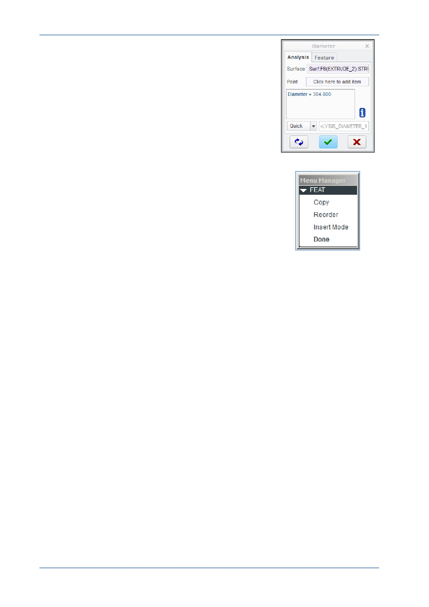

PTC Academic Program
Dialog Boxes — Content-sensitive windows that appear,
displaying and prompting you for information.
Menu Manager — A cascading menu that appears on the far
right during the use of certain functions and modes within
Creo Parametric. You select options working from top to
bottom in this menu; however, clicking “Done” works from
bottom to top. Bold menu options will be automatically
selected if the middle mouse button is clicked.
© 2012 PTC
Creo Parametric 2.0 Primer
Page 8